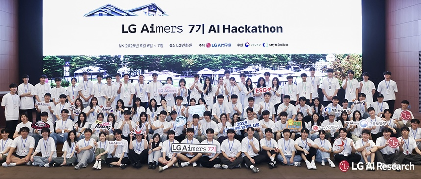

Sangwoo Kim (김상우)
I am an engineer focused on bridging the gap between theoretical AI models and physical systems. Specializing in 3D Reconstruction and Agentic AI, I excel at optimizing complex algorithms to run efficiently on edge devices and real hardware.
Experience & Awards
| 투빅스(ToBig's) 인공지능 및 빅데이터 연합동아리 제23기 운영부장 및 운영진 수료 [cite: 15-16] |
| LG Aimers 7기 해커톤 최종 5위 전국 800여 팀 중 본선 진출 및 식음업장 수요 예측 모델 개발 [cite: 17-18, 94] |
| 중앙대학교 항공우주 동아리 MACH 12기 회전익(드론) 제어팀 활동 및 비행 안정성 제어 시스템 연구 [cite: 13-14] |
| 중앙대학교 ALCP 자기주도학습 교내 우수상 1축 위성 자세 제어 시스템 설계 및 구현 스터디 [cite: 21, 209-210] |
Selected Projects

PyTorch, SPAR3D, TRELLIS.2, CLIP, Three.js
- CLIP(ViT-B/32) 기반 Semantic Filtering 설계로 부적합 객체 사전 판별 및 리소스 최적화 [cite: 50]
- SPAR3D 및 TRELLIS.2를 결합한 Dual-Track Inference로 생성 속도/품질 한계 해결 [cite: 51]

Raspberry Pi, EfficientDet-Lite1, Solar Pro 2, OpenCV
- Flask 기반 분산 컴퓨팅 설계로 기기 연산 부하 해결 및 10 FPS 실시간성 확보 [cite: 89]
- Solar Pro 2 기반 JSON Schema를 적용하여 자동 순찰 보고서 생성 기능 구현 [cite: 92]

Python, Pandas, BiLSTM, Scikit-Learn
- 휴일 시퀀스 및 주변 시설 내장객 수 등 도메인 특화 외부 변수 기반 피처화 [cite: 121]
- 커스텀 손실 함수(SMAPE) 직접 구현을 통해 모델 성능 약 22% 개선 [cite: 123]

Arduino, HC-12, Python, OpenCV, PID Control
- 고정익 추종 촬영을 위한 2축 짐벌 및 리트랙팅 랜딩기어 시스템 구축 [cite: 193]
- HC-12 무선 통신 모듈을 활용한 지상 관제소-드론 간 1km 대역 명령 체계 수립 [cite: 205]
Admin
Kaggle API, Python, LLM Prompting
- 제2회 MixUP 데이터톤 관로 ID별 분할 로직 설계로 리더보드 무결성 확보 [cite: 156, 166]
- DACON Bias-A-Thon: CoT 기반 프롬프팅으로 LLM 응답 중립성 강화 프로세스 정립 [cite: 172, 177]
© 2026 Sangwoo Kim.